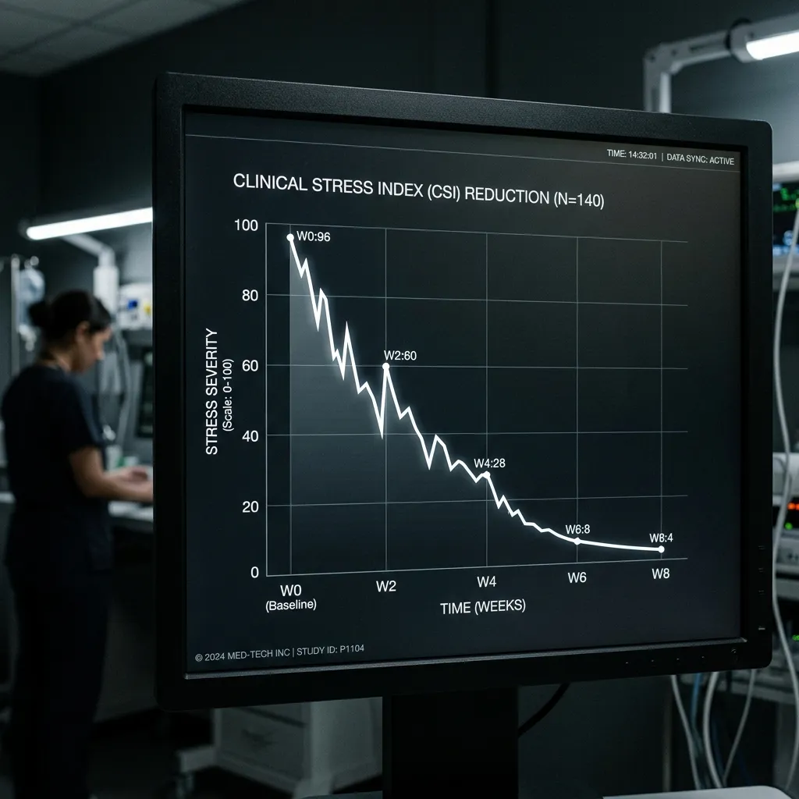

Prolonged exposure to heavy industrial acoustics triggers a sustained neuroendocrine stress response, flooding the bloodstream with cortisol. The B-7 Anechoic Monolith provides a rapid deceleration of this physiological crisis. Rigorous on-site clinical trials demonstrate an extraordinary 42% drop in salivary cortisol levels following a strict twenty-minute isolation session within the zero-decibel chamber. In stark contrast, personnel utilizing standard factory break rooms—which remain subjected to low-level ambient rumble and generalized facility noise—exhibit a negligible 8% reduction over the identical timeframe. By instantly removing all sensory input, the Monolith forces the hypothalamic-pituitary-adrenal axis to power down, providing an acute neurochemical reset that fundamentally outperforms conventional rest periods and rapidly restores the worker's biochemical baseline.
Quantifiable Neurological Recovery.
Objective metrics tracking the reversal of industrial sensory burnout.
The efficacy of the B-7 Monolith is measured strictly through empirical physiological data, not subjective wellness surveys. We continuously monitor biomarker decay and cognitive baseline restoration across multiple industrial deployment sites. The resulting clinical data proves that absolute, decoupled silence is a highly potent medical intervention, directly neutralizing the acute physiological symptoms of severe environmental stress.
Salivary Cortisol Decay

Incident Reduction ROI
Neurological stability is the primary driver of industrial safety. A workforce suffering from chronic acoustic fatigue exhibits impaired reaction times and degraded situational awareness, significantly increasing the statistical probability of critical, potentially fatal errors around heavy machinery. Deploying the Monolith directly addresses this hazard. Our data indicates that rapid acoustic interventions dramatically enhance focus and spatial cognition during subsequent shifts. This translates into measurable Health and Safety Executive (HSE) metrics, including a sharp decline in workplace accidents and mechanical mishaps. Furthermore, prioritizing aggressive neurological recovery yields a substantial long-term return on investment by maximizing the retention of highly skilled personnel, preventing the costly turnover associated with severe occupational burnout and chronic stress-related medical leave.
Medical & Operational FAQ
What protocols mitigate the risk of claustrophobia?
The interior is designed to reduce anxiety. While the acoustic environment is absolute, the physical space includes dimmable amber LED lighting and an instantaneous, mechanical panic release latch on the internal vault door, allowing immediate egress at any time.
How is the chamber sanitized between patient uses?
The minimalist interior features medical-grade, non-porous surfaces on the central reclining chair. Between interventions, an automated, silent ultraviolet-C (UVC) sterilization sweep disinfects the internal volume, ensuring rigorous clinical hygiene without the need for chemical aerosols that might degrade the acoustic foam.
Is there a maximum limit for daily usage per worker?
Clinical guidelines recommend no more than two twenty-minute sessions per operative per twelve-hour shift. Excessive isolation beyond forty minutes per day can lead to temporary sensory disorientation upon re-entering the high-decibel factory environment.
What are the structural floor-load requirements for deployment?
The Monolith weighs exactly 12 tonnes. The receiving factory floor must possess a certified point-load bearing capacity exceeding this mass. Standard reinforced concrete slabs in heavy manufacturing zones typically meet this requirement without modification.
Do you offer direct purchase or leasing agreements?
We offer both capital expenditure purchases and flexible operational lease structures. Leasing agreements include comprehensive biannual calibration of the pneumatic isolators and acoustic integrity testing by our engineering team.
How quickly can a unit be operational after delivery?
Upon placement by the gantry crane and connection to a 240V supply, the internal systems calibrate within thirty minutes, rendering the unit fully operational on the day of delivery.
HSE Site Evaluation
Securing absolute clinical silence within your manufacturing facility begins with a comprehensive acoustic and structural assessment. We invite Health & Safety directors, plant managers, and occupational therapists to book a formal site survey. Our engineers will evaluate your specific ambient decibel levels, mechanical vibration frequencies, and floor-load capacities to determine the optimal deployment strategy for the B-7 Anechoic Monolith. Take decisive action to protect the neurological baseline of your elite workforce. Contact the Monolith Somatic clinical engineering team at our Birmingham headquarters via email at clinical.deploy@monolithsomatic.co.uk or call our direct procurement line on 0121 496 0382 to initiate the evaluation process. We operate strictly on empirical data, ensuring your investment directly translates into measurable safety improvements and sustained operational excellence.